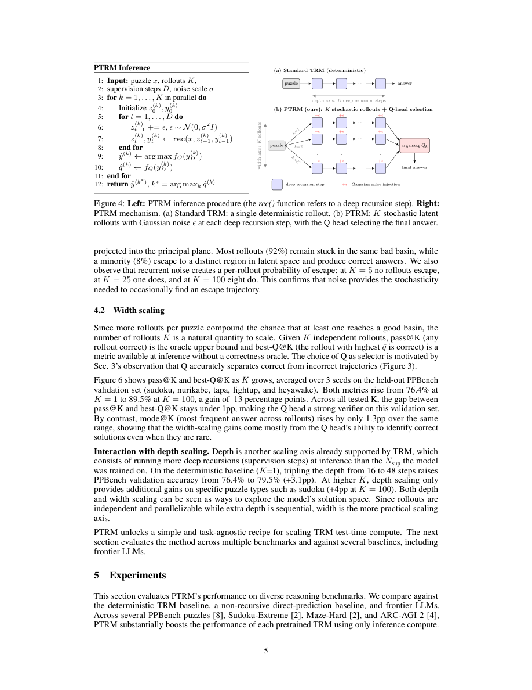

#1
★ 8/10
Probabilistic Tiny Recursive Model
概率微递归模型

图 Figure · Page 5 of paper
🎯 向微递归模型注入高斯噪声，实现测试时随机探索
Injecting Gaussian noise into tiny recursive models unlocks test-time stochastic exploration at 7M parameters.
| 维度 | 中文 | English |
|---|---|---|
| ❓ 待解决 的问题 |
微递归模型（TRM）通过反复优化隐状态来解决复杂推理任务，参数量极少，但其确定性递归过程容易陷入次优解且无法逃脱。现有补救方法依赖针对特定任务设计的输入扰动加投票聚合，缺乏通用性，需要针对每个任务单独设计。 | Tiny Recursive Models (TRM) are compact, efficient models that solve hard reasoning puzzles by iteratively refining a latent state — but their deterministic recursion can trap them in suboptimal solutions with no way to escape. The existing workaround uses task-specific input perturbations and majority voting, which is not generalizable across tasks and requires manual design per benchmark. |
| 💡 解决 的亮点 |
• 任务无关的随机探索框架：在每个深度递归步骤注入高斯噪声，使并行轨迹能够探索多样化的解空间，无需重新训练。 • 复用Q头进行智能选优：不依赖多数投票，而是直接复用模型原有的Q头（原本用于早停）作为质量评分器，从并行轨迹中挑选最优解。 • 极致效率：仅用700万参数，以不到前沿大模型0.0001倍的成本，在多项任务上超越GPT-4级别模型。 | • Novel task-agnostic stochastic framework: Gaussian noise is injected at every deep recursion step, enabling parallel solution trajectories to explore diverse "solution basins" without any retraining. • Smart selection via existing Q head: Rather than using naive majority voting, PTRM reuses the model's built-in Q head (originally for early stopping) as a quality scorer to pick the best trajectory among parallel runs. • Extreme efficiency: Achieves near-frontier-LLM-beating accuracy using only 7M parameters at less than 0.0001× the cost of large models like GPT-4-class systems. |
| 🧪 实验 内容 |
实验在两个主要基准上进行：Sudoku-Extreme（极高难度数独变体）和Pencil Puzzle Bench（多样化逻辑谜题集合）。基线模型包括原始确定性TRM、任务特定扰动+投票版TRM，以及GPT-4级别的前沿大语言模型。评估指标为谜题求解准确率（%）。所用模型仅有700万参数，PTRM纯粹在测试阶段应用，无需重新训练。 | Experiments were conducted on two main benchmarks: Sudoku-Extreme (a highly challenging variant of Sudoku) and Pencil Puzzle Bench (a diverse collection of logic puzzles). Baselines include the original deterministic TRM, the task-specific perturbation+voting variant of TRM, and frontier LLMs (GPT-4-class). Evaluation metrics are puzzle-solving accuracy (%). The model used has only 7M parameters, and PTRM is applied purely at test time without any retraining. |
| 📊 实验 结果 |
在Sudoku-Extreme上，PTRM将准确率从87.4%（基线TRM）提升至98.75%，提升11.35个百分点。在Pencil Puzzle Bench上，准确率从62.6%跃升至91.2%，提升28.6个百分点。PTRM在Pencil Puzzle Bench上的准确率几乎是前沿大语言模型的两倍（91.2% vs. 55.1%），同时仅使用700万参数，计算成本不足大模型的0.0001倍。 | On Sudoku-Extreme, PTRM improves accuracy from 87.4% (baseline TRM) to 98.75%, a gain of +11.35 percentage points. On Pencil Puzzle Bench, accuracy jumps from 62.6% to 91.2%, a gain of +28.6 percentage points. PTRM also nearly doubles the accuracy of frontier LLMs on Pencil Puzzle Bench (91.2% vs. 55.1%), while using only 7M parameters at less than 0.0001× the computational cost of those large models. |
| 🏁 结论 | 本文证明了向微递归模型的递归过程中注入高斯噪声，即可在不重新训练的情况下，通过测试时随机探索大幅提升复杂推理任务的求解准确率。PTRM以极低的参数量和计算成本，在多项逻辑谜题基准上超越了参数量大数千倍的前沿大语言模型，为小模型的测试时计算扩展提供了一种通用且高效的新范式。 | This paper demonstrates that injecting Gaussian noise into the recursive latent states of Tiny Recursive Models enables powerful, task-agnostic test-time stochastic exploration without retraining, dramatically improving puzzle-solving accuracy. PTRM establishes a new efficiency frontier, outperforming frontier LLMs on logic benchmarks at a tiny fraction of their parameter count and cost. |
| 🔗 论文 链接 |
arXiv: 2605.19943v1 · 📥 PDF | |
⚙️ Method · 方法详解
PTRM在TRM推理阶段的每个递归步骤中注入小幅高斯噪声，将原本确定性的迭代过程转变为随机过程。多条并行轨迹同时运行，由于噪声的差异，每条轨迹探索不同的解空间区域。模型原有的Q头（价值估计器，最初用于判断何时提前停止递归）被复用为轨迹质量评分器，从中选出最优答案。整个过程无需修改训练流程，无需任务特定增强，可直接跨不同谜题类型开箱即用。
PTRM extends TRM by injecting small Gaussian noise vectors into the latent state at each recursion step during inference, turning the deterministic iteration into a stochastic process. Multiple parallel trajectories are run simultaneously, each exploring a different region of the solution space due to the noise. The model's existing Q head — a value estimator originally designed for deciding when to stop recursing early — is repurposed to score each trajectory and select the most promising final answer. This requires no modification to training, no task-specific augmentation, and works out of the box across different puzzle types.
📐 Key Formulas · 关键公式
\[\hat{z}_{t+1} = f_\theta(z_t + \epsilon_t, x), \quad \epsilon_t \sim \mathcal{N}(0, \sigma^2 I)\]
💡 PTRM的核心操作：在每个递归步骤中，向隐状态 z_t 注入从均值为0、标准差为σ的高斯分布采样的噪声 ε_t，再输入递归函数 f_θ 得到下一步隐状态，实现随机探索。
The core PTRM operation: at each recursion step, Gaussian noise ε_t (sampled from N(0, σ²I)) is added to the current latent state z_t before passing it through the recursive function f_θ, enabling stochastic trajectory exploration.
\[\hat{k} = \arg\max_k Q_\phi(z_k^{(i)})\]
💡 轨迹选优公式：对于每条并行轨迹 i，使用Q头 Q_φ 对各递归步骤的隐状态评分，选取得分最高的步骤 k 对应的输出作为最终答案。
Trajectory selection: the Q head Q_φ scores each latent state across recursion steps and parallel trajectories; the step k with the highest Q value is selected as the final answer output.
🌟 Why It Matters · 为什么重要
随着AI领域越来越关注通过测试时计算扩展来增强推理能力，PTRM有力证明了小型高效模型配合智能随机推理即可媲美甚至超越大型语言模型。这挑战了"规模决定推理能力"的假设，为构建极低成本却高性能的推理系统开辟了实际可行的道路。
As the AI field increasingly focuses on test-time compute scaling as a path to stronger reasoning, PTRM offers a compelling proof-of-concept that small, efficient models with smart stochastic inference can rival or beat massive LLMs on structured reasoning tasks. This challenges the assumption that scale is necessary for hard reasoning and opens a practical path toward extremely cheap yet capable reasoning systems.